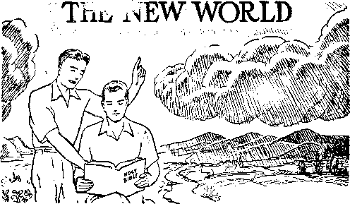

A JOURNAL OF FACT, HOPE AND COURAGE
The New World Theocratic Assembly From the key city of Cleve'and, Ohio, Sept. 18-20, 1942
Germany’s War Machine
Corrupters of youth; deciding who may bear children; turning wine into gasoline
Standard Against the Enemy
What is it? and who are the ones lifting it up?
Japan’s 20"Year-Old Victory
Defeat of Persecution
Recent instances of victories over the demons
Five Cents a Copy Vol. XXIV No. 603 • $1.25 In Canada and Published Every
One Dollar a Year October 28, 1942 • Foreign Countries__________Other Wednesday _
The New World Theocratic Assembly of Jehovah’s witnesses
Germany’s War Machine Sows and Reaps (Part 1)
“Thy Word Is Truth”
Language of the Tanaka Memorial
Presenting “This Gospel of the Kingdom” “Introductions”
British Comment
Government by the 1922 Committee
Saved Several Lives by Fainting
Published every other Wednesday by WATCHTOWER BIBLE AND TRACT SOCIETY, INC.
117 Adams St., Brooklyn, N. Y„ U. S. A.
Editor Clayton J. Woodworth
Business Manager Nathan H. Knorr
Five Cents a Copy
$1 a year in the United States $1.25 to Canada and all other countries
NOTICE TO SUBSCRIBERS
Remittances: For your own safety, remit by postal or express money order. When coin or currency is lost in the ordinary mails, there is no redress. Remittances from countries other than those named below may be made to the Brooklyn office, but only by International postal money order.
Receipt of a new or renewal subscription will be acknowledged only when requested. Notice of Expiration is sent with the journal one month before subscription expires. Please renew promptly to avoid loss of copies. Send change of address direct to us rather than to the post office. Your request should reach us at least two weeks before the date of issue with which it is to take effect. Send your old as well as the new address. Copies will not be forwarded by the post office to your new address unless extra postage is provided by you.
Published also in Greek, Portuguese, Spanish, and Ukrainian.
OFFICES FOR OTHER COUNTRIES
England 34 Craven Terrace, London, W.2
Australia 7 Beresford Road, Strathfield, N.S.W. South Africa 623 Boston House, Cape Town
Mexico Calzada de Melchor Ocampo 71, Mexico, D.F. Brazil Caixa Postal 1319, Rio de Janeiro
Argentina Calle Honduras 5646-48, Buenos Aires Entered as second-class matter at Brooklyn, N. Y., under the Act of March 3, 1879.
Do You Want $3,104,591?
♦ If you want $3,104,591 all you have to do is to go to the Union Banking Corporation, 39 Broadway, and prove that you are the rightful owner of that big sum which they now have in their possession. They don’t know who owns it. All they know is that the building of the Bank voor Handel en Scheepvaart in Rotterdam was bombed out of existence, and nobody in the United States knows what has become of its officers, who alone knew to whom the above sum of money belongs. The Rotterdam bank was counted as a Thyssen bank, but whether or not the money belongs to Thyssen, self-confessed backer of the Hierarchy and of Hitler, nobody knows.
Prayers for Hitler
♦ Dr. Herbert Booth Smith, moderator of the Presbyterian church in the United States, wants a day of prayer for Hitler. Why not pray for the Devil, whose child he is? The thing is silly. Such prayers would be an abomination to Almighty God and to every true Christian. Hitler, with all his heart, hates all that is right and true, and is a perfect personification of hate, cruelty, and murder. Moreover, not one thing that he says can be believed, and he would murder his best friend as quickly as he would look at him. No woman that he looks at is safe.
Studies of Nazi Air Engines
♦ Studies of Nazi air engines made by Pratt & Whitney, specialists in America, show that beneath a dull-black body lies the most precise and finished workmanship imaginable. In the German fighter planes the take-off with a cold engine is accomplished in a few seconds. After one minute’s flying an automatic throttle comes into play. The design for ignition is marked by simplicity, lightness and efficiency. No inferior materials were used.
CONSOLATION
“And in His name shall the nations hope.”—Matthew 12:21, A.R.V.
Volume XXIV Brooklyn, N. Y., Wednesday, October 28, 1942 Number 603
From the key city of Cleveland, Ohio September 18-20, 1942
LONG before one reached the beautiful and spacious auditorium he was made aware that something new and different was in the air. True, there was a war show on in the city that week-end. This was staged right on the lake front adjacent to the auditorium, but that was not what impressed the people. This new and different thing in their midst far overshadowed even the war show. It was a “new world assembly” of Jehovah’s witnesses. The mayor felt the effect of this and sent out a press release calling upon all citizens of Cleveland to stay away from the New World Assembly and support the war show. He advised all and sundry that there was no representative of the city present to welcome Jehovah’s witnesses to the city of Cleveland, this despite the fact that representatives of the city sent a very urgent and gracious invitation to Jehovah’s witnesses to assemble there. However, the mayor might just as well have tried to bail out Lake Erie with a sieve as try to stop the people of good-will from coming to this Theocratic assembly. The people of Cleveland were conscious of the fact that this “new thing” dominated everything else during the week-end.
New World Theocratic Assembly - Auditorium at the key city
Months prior to the assembly the Society obtained and set up the Franklin Auditorium as headquarters for the preliminary arrangements for the assembly and Theocratists from Maine to California and Hudson Bay to the Gulf of Mexico gathered to assist in the preparations for this great assembly. The Lord put His spirit upon them and their efforts were fruitful, to the glory of His name.
Thousands of
rooms were obtained in hotels, homes and tourist camps; this de-spite the very heavy demand for rooms by those attending the war show and other conventions which overlapped this assembly. Each and every one of our brethren was comfortably established and many reported the splendid re-
A striking contrast in publicity
ception they received from citizens of Cleveland, a great many of whom keenly resented the unjust and discriminating remarks of their mayor. Some even made it their business to call up the mayor and chamber of commerce to register their objection to the newspaper release and the fact that no representative of the chamber of commerce was there to welcome Jehovah’s witnesses who were assembling in Cleveland by the thousands and bringing much business to the city.
There are people of good-will in Cleveland, and He who promised that a cup of cold water given in His name would receive its reward will see to it that these people of good-will get a blessing. A great many of them were richly blessed as a result of this Theocratic assembly.
The approaches to the city were flanked with massive signboards announcing the assembly, particularly the public address, “Peace—Can It Last?” Hundreds of streetcars were similarly placarded. Every street intersection within the large downtown sections of the city had its information walkers and magazine publishers courteously placing magazines and giving out announcements to all who passed by. Other hundreds were going from store to store with magazines and announcements, and thousands more going from house to house with literature, recordings, leaflets and personal invitations for the people. This constituted an advertising campaign such as Cleveland never before witnessed. It was a living witness symbolic of the new world being ushered in. Compared with it the lifeless placards, banners and ballyhoo of the smug politicians behind their official pomp, advertising the war show, were dead, and symbolic of the old world that is passing away.
The foregoing is but a very inadequate description of the impression of the Theocratic Assembly that the man of the street and the visitor received before entering the auditorium.
As he enters the auditorium where the assembly was held he finds himself in a spacious foyer or lobby where thousands are enabled to assemble at one time. This foyer is flanked on the right and left with rooms and offices which were used as executive offices, check rooms, ushers’ rooms, legal offices, and the other innumerable offices required to efficiently carry on an assembly of this nature. There was space for everything, but always taxed to capacity to meet the requirements of Jehovah’s witnesses.
From the main foyer one entered the large auditorium, with its tremendous balcony, which is capable of seating 12,000 people; a magnificent auditorium indeed. The first thing that one’s eyes lighted upon as he entered the door was a beautiful silken banner hung so that it stretched across the center of the stage about ten or twelve feet above the floor, reading, “Blameless in the day of our Lord.” This stood out so strikingly that it must have impressed everyone entering the auditorium, particularly in view of the old world’s being on its way out and the new world growing until it fills the whole earth.
Beyond the massive stage was another smaller auditorium, with its balconies, capable of seating up to 3,000 people, and so arranged that all those seated were facing the stage in the center. When the heavy dividing curtains on the stage were removed the audiences in both auditoriums saw and heard the speaker. The acoustics were excellent. The witnesses did an excellent job of decorating the stage. Ferns and flowers of every imaginable hue banked both ends of the stage and along the front. An excellent orchestra composed of consecrated Christians, Jehovah’s witnesses, completed the setting for this assembly as far as the auditorium was concerned. These two auditoriums were entirely inadequate to hold the vast audiences at Saturday’s and Sunday’s meetings. It was necessary to fill up the basement, which was capable of holding up to 10,000 more people.
When entering the foyer one walked down a wide and beautiful stairway and found himself in the midst of the cafeteria. The basement of the building was used for cafeteria, book room, territory assignments, and room assignments. The cafeteria served delicious meals three times each day. For breakfast, fruit, cereal (hot and cold), boiled eggs, coffee, tea, and milk. Throughout the rest of the day cooked meats, fish, vegetables in abundance, as well as deserts, were available; all good, wholesome food. The way the conventioners went for these provisions for the physical man showed their, appreciation of the Lord’s provision in this respect. Over 1,300 pioneers were provided with meals free, as were the auditorium crew, from the head man to the cleaner-ups, who always showed up at mealtime and were treated with New World hospitality. They could not understand it as they told us that at other conventions they were generally the goats for everyone and everything that happened. Here they found no difficulty in handling the crowd and were supplied with all they could eat. They reciprocated by cooperating fully and sympathetically.
The cafeteria had twelve lines going to capacity between the meetings. It took approximately 200 witnesses to care for the cafeteria requirements.
The book room did a rushing business, particularly after the release of the new Bible. Woe unto anyone that stood in the way of the pioneers when they were told they could have a copy of this “sword of the spirit” free, and then when The New World was released they were back again for their copy. Words are inadequate to describe the joy of the pioneers as they assembled for these provisions of the Lord.
All who were not otherwise engaged hurried to the territory department to get their assignments. By Friday night all information-walking and magazine territory was gone; all that was left in Cleveland was a little business and residential territory, in which all worked during Saturday and Sunday to see that an adequate witness was given to the people of Cleveland and an invitation to attend the public discourse.
The room assignment department was a busy place, particularly Friday and Saturday mornings, but all of the witnesses were well and comfortably cared for. Many Clevelanders who at first, because of the mayor’s statement in the press, were reluctant to let Jehovah’s witnesses have rooms, were calling up before the convention was over and anxious to obtain some of Jehovah’s witnesses to stay with them, after they had found out from their neighbors what really fine people Jehovah’s witnesses are.
First aid was kindly and efficiently administered for all needing it.
All of the foregoing details, while very necessary, were only incidental to the real feast (represented in the various talks) which the Lord had in store for His people. From the moment the chairman stepped on the platform at 8 p.m. on Friday evening, to officially open the convention, until its close the audience at each assembly was spellbound, particularly during those speeches which were delivered over the network by the president and other brethren.
The keynote speech, on “The Only Light”, which started at 8:05, and the fifteen-minute speech which followed, by the president presenting “The Sword of the Spirit”, were received with great enthusiasm, and particularly over this new instrument which the Lord provided. All in the audience held their seat until the last minute, seeming reluctant to leave lest they should miss some feature of the wonderful thing called to their attention.
Saturday morning everyone who was available responded for field service at nine o’clock. Witnessing continued until well after noon. The afternoon talks were well received, particularly the discourse on “Fighters for the New World”. The revelation of the Jephthah picture was thrilling beyond words. In a flash the audience understood the illustration of the joyous maiden meeting her warrior father as shown on the cover of the program. Every consecrated heart present concurred with the unfolding of Jephthah as representing Christ Jesus, the Head of the Lord’s organization, and His faithful instrument on earth, the Watch Tower Society. Those of the “other sheep” present greatly rejoiced as they saw themselves represented in Jephthah’s daughter joyfully accepting their responsibility in harmony with Jephthah’s vow in presenting themselves for more zealous temple service. The concluding resolution was heartily supported by the 17,500 fighters for the new world in the audience. Everyone present realized the power and the spirit of the Lord in evidence at this assembly, and the revealing of His purposes to His people, leading them onward to victory. During this meeting the audience remained gripped with the force of the picture and the power of the presentation, all recognizing their individual and collective responsibility. The evening talks were well received also.
Pioneer applications were eagerly sought at the conclusion of the meeting.
The brethren rejoiced greatly in the new organization instructions and the provisions that the Lord has made to comfort them in the final days of battle.
As the various features of the battle to date were recounted in “Victory”, the closing speech of the day, the brethren recognized the power of the Lord preserving and leading His people in the great fight to accomplish the good pleasure of His will.
Sunday morning 459 candidates for immersion presented themselves and went forward to be immersed, while the others of those in attendance went to the field to further advertise the public lecture that afternoon and invite and bring all they could to the meeting. By the time the speech “Peace—Can It Last?” by N. H. Knorr, was put on, Sunday afternoon, there were over 26,000 people in attendance. The two large auditoriums visible to the speaker were packed to capacity, and all the space in the basement, as well as the ballroom, was filled. The foyer had a large number of people who were served by the Auditorium’s sound equipment, and loudspeakers were provided for people on the outside who could not get in. Cleveland responded with enthusiasm to the invitation received, despite efforts of the mayor and other representatives of the enemy organization to hold them back.
Words are inadequate to describe the power, eloquence and effect of the presentation of “Peace—Can It Last?” As the 17th chapter of Revelation unfolded, each and every one could clearly identify the “beast”, see its beastly effect upon the nations and the people of the world in the past, and could clearly recognize the harlot mounting upon the “peace beast” to dominate the nations and peoples of the earth. All could clearly recognize, as the speaker presented the facts, that human efforts could not establish a lasting peace. Then as the picture unfolded, and those nations that were supporting the Hierarchy were seen to turn on her and destroy her, enthusiastic applause greeted this. All in the audience were anxious to get a copy of this speech and also to take a number of copies for their friends, which were provided free. It was recognized by all present as the most powerful and clear denunciation of the enemy that we have had to date.
The further speeches of the evening were well received by all present, particularly when it was called to the attention of the audience that the committee representing the city of Cleveland forwarded a letter of invitation to the Society inviting them to be present and enjoy the hospitality of the city, whereas, contrasting with this, was the mayor’s denunciation in the paper clearly indicating, as the speaker said, that the invitation was simply “hooey”.
The reports by representatives from Norway, Australia, and Britain, indicating the progress of the work in Africa, Australasia, and the British Isles despite war restrictions and legal ban, were enthusiastically received by the audience. The concluding “Message from the President” was very touching, acknowledging in the presence of all the goodness of the Lord in pouring out His spirit so richly upon the Assembly. All present were OCTOBER 28, 1942 deeply stirred by these concluding remarks. Hundreds of telegrams were received from the other 51 cities in the United States, as well as from assemblies in England, South America, Hawaii, and West Africa, all indicating similar blessings poured out upon them by the Lord. At Springfield, Ill., Little Rock, Ark., and Klamath Falls, Oreg., the enemy tried desperately to stop the message. Despite intense opposition and threats of bodily injury the brethren carried forward and completed the Assembly, with the Lord’s blessing at all points.
The entire audience, with the exception of the very few that could not possibly do so, stayed until the very last meeting, and seemed reluctant to break away. Expressions heard throughout the Assembly were, “If this assembly lasted any longer we wouldn’t be able to hold the blessings we received,” “We are unable to hold any more surprises.” It was clearly evident to all that the Lord opened the windows of heaven and poured out upon His people a blessing that they could not hold, and what is true of the city of Cleveland is also true of the 51 other points throughout the United States. The same preparations were made, the same advertising efforts put forth, same rooming accommodations provided for those in attendance, same provisions for their care and comfort, and the same food provided on the Lord’s table for all who were in attendance. This was undoubtedly the most blessed assembly of the Lord’s people ever held upon the earth, and by far the largest. The total attendance at the 52 points was 126,000 people. When this is viewed from the standpoint of existing conditions in the country, limitations in transportation, by railway, bus, and air, and in rubber and gasoline, and other handicaps that had to be overcome, it is a clear evidence that nothing but the Lord and the spirit of the Lord could accomplish it; and all praise and thanks were continually rendered unto Him each day for His goodness toward His people.
THE overwhelming flood of German arms in victorious sweep through the low countries and into France during the eventful year 1940 has caused much comment on the intense organization and attention to minute detail which made such blitzkrieg possible. The co-ordination of ground and air forces, men and machines, fighting troops and engineer corps, and the maintenance of adequate supply lines for fighting on such gigantic scale and on many far-flung fronts, left all the world wondering, and portions of it reeling under the impact of its devilish destruction. Such God-defying destruction of life in violation of the everlasting covenant relative to the sanctity of life could originate only with the great archdemon, Satan himself. Nevertheless, he had accomplices, willing ones, on the earth. These chief dupes of his had in turn their own tools to carry out the diabolical job committed to their trust by the god of this world. They have sown death; they shall reap the same.
The Devil has always had a goodly crop of ruthless murderers at his disposal, from Cain onward. Often he has contrived to put such butchers at the head of peoples organized into nations, starting with Nimrod. Down through the centuries their bloody trail may be traced but not adequately described. Now it is the twentieth century. The peoples of earth have religion, and. are getting “more religion” every day. They are now civilized. A golden flood of peace and prosperity the result? Alas, no; rather the Devil has a bumper crop of thugs, religious civilized ones, if you please, but they nevertheless make the “old-timers” pale into insignificance.
The “Black Sheep”
Catholic Hitler, Catholic Mussolini, the Catholic and papal-“blessed” Spanish “Butcher” Franco, the new convert Hirohito, and their satellites, in their lust for power and world domination, zealously forge link after link in their chain to bind the world to their “new order”. Little matter if in the process the world be turned into a slaughterhouse. One of the present crop of totalitarians, however, is a bad man! He has no religion! He is not a “Christian gentleman”. ‘Philanthropic’ Hitler, the biggest frog in the Axis puddle, cannot bear to see his Communistic brutalities spread. He must be converted. How? A crusade. It has usually been the prescription; the leopard does not change its spots. So now, in 1942, the German juggernaut is crusading deep in Russia teaching the essentials of “Christianity”, a la papacy, not according to the great Prince of Peace. But why mention Him ? He never was a religionist, nor was He popular with the world. He didn’t advance “Christianity” as did Charlemagne, Tor-quemada, Philip II of Spain, and other church “swords”. In a world gone mad, Jesus of Nazareth is the real “forgotten man”. That’s why it’s mad.
Their aim of world domination is likewise mad. They shall never wrest the dominion from Jehovah’s anointed King, Christ Jesus, and this shall be manifested soon to all.
Enough, at present, for those willing killers. Their consuming and ambitious greed and their utter depravity is apparent to all not under the same demon spell. But what about all the individuals that go to make up the aggressor-army, both at the fighting front and the vast civilian force behind the lines, each one a vital cog in the war machine? How is it possible to delude entire nations into following devils ?
Jehovah God gives the answer, at Revelation 16:13,14: “And I saw three unclean spirits like frogs come out of the mouth of the dragon, and out of the mouth of the beast, and out of the mouth of the false prophet. For they are the spirits of devils, working miracles, which go forth unto the kings of the earth and of the whole world, to gather them to the battle of that great day of God Almighty.” Hitler claims to hear voices, and to be guided by the spirits; it’s his one claim that’s true. The “voices” and guiding spirits are the demons. Those same demons by divers means inexorably draw the peoples living under the governments of the dictator kings into the maelstrom. What are some of the visible means used?
Rise to Power
Mr. Ted Lawrence, one of Jehovah’s witnesses who resided in Germany for twelve years and has just recently returned to this country, sent in a lengthy communication in regard to conditions in the German Reich, and had the following to say concerning the ascendancy of the Nazi star:
It was Bruening, I believe, who went to Paris to appeal for more favorable terms than those dictated by the Versailles treaty, and when turned down, warned of the danger of an insurgent power under a man named Hitler. Bruening was laughed at derisively for even Suggesting that such a mountebank might conceivably be a threat or danger to them.
The Nazis began their rise to power in 1930 when they received over a hundred seats in the Reichstag, whereas they had only eight prior to that year. The Bruening government was hampered by the Nazis. Every time a bill was introduced which had the aspect of possibly improving conditions in the Reich, it was vetoed by the votes of the Nazis in order to disrupt everything which the democratic government tried to do and then to have the people bl^me the government.
Bruening, in desperation over the nation’s financial plight, issued his emergency laws, decreasing the salaries and wages of the German officials, clerks and laborers, and increasing the taxes of the merchants.
The Nazis, who were backed by the great industrial kings, did everything possible to cause strife between capitalism and labor. It is an open secret that together they did much to frustrate the efforts of the democratic government, and were largely to blame for the unemployment situation. Because of the backing of such industrial leaders as Thyssen, Krupp, and Kipsdorf, Hitler had the means at his command to enable him to create and conduct a tremendous propaganda campaign. Food to the hungry! Labor for the unemployed! Return to the comparatively high standard of living of 1914! In so doing he did not have to explain his part in the conditions that led to the helping-hand policy. Always the good Samaritan. With the financial help he gave every man who joined his party, especially the S.A. (Sturm-Abteilung, or storm troopers), and three meals a day to the underfed, thus baiting the poor man and the unemployed, he soon had a sizable following.
Up to 1932 the Communist party was a party without an able leader; it was just like an enormous balloon without any driving force; but in 1932, with the rise of the Nazis, the Communists began to give them a semblance of competition, and many Nazis dropped their membership in the party and joined the Communists. On the other hand many Communists joined the Nazi party. There were Nazi stool pigeons in the Communist camp. When Hitler became chancellor, they betrayed their friends and had them thrown into concentration camps. It is my opinion that Communism would never be accepted in Germany. The German people are educated to be nationalistic, not communistic. But Hitler frightened them with his warning that Communism was inevitable if he were not elected to power to fight the menace. The Communist scarecrow frightened the sparrows to seek the protection of the hawk! The man in the street frequently whispered that Nazism and Communism have many things in common, namely, food rationing, clothes rationing, concentration camps, the Nazi four-year plan and the Soviet five-year plan, the general party organization, their common theory of supremacy of the State, dictators and their secret police,—in Germany the Gestapo murder the people who do not bend to their will or obey their orders, as do the G.P.U. in the Soviet Republics.
Old Reliable
Communism has always been the Roman Catholic Hierarchy’s pet “bogeyman” to instill fear into the minds of the people and thus scare them into the arms of their reactionary totalitarian-istic schemes. Catholic Hitler used it, and by it bluffed his way into power. In the early part of 1933 Hitler became Reichschancellor and his power steadily increased, and proportionately increasing with it the cruelties of the gestapo and concentration camp to hold it secure. The rearmament of the German nation began, at first quietly and unobtrusively, but soon was done openly. In the years immediately preceding the outbreak of World War II she defiantly flaunted her military might before the world, and the German people, whatever hopes they may previously have had for peace, knew now they were being led to war. But it was too late to escape: the people had been caught, and the grip of the hand that ruled was as steel!
Propaganda played its role in uniting the nation. Most men are satisfied with opening their mouth and sticking their own foot in it. Not so with the Nazi loudspeakers : they open theirs and stick the feet of the whole country in; and certainly there’s room enough. The Nazi spellbinders piped, and the people blindly followed. The newspapers lamented the “cruel treatment” of German nationals in Austria, and they were “liberated”. Czechoslovakia “terrorized” the Germans residing in that land, and that must cease. Every tirade against “oppressors” meant an impending major crisis. The peace of the world was each time placed in jeopardy. It was the “horrifying” acts of the “bloodthirsty” Poles that finally “exhausted Hitler’s patience”, and the world took up life where it had left off in 1918.
Corrupters of Youth
Another requisite, and one recognized by Hitler, to keep the people following the state is early childhood training. These cradle-robbers look ahead to a far larger crop of mobsters to keep the “new order” going for its scheduled 1000 years. This is just another of the policies of the Roman Catholic Hierarchy which Catholic Hitler so heavily draws upon to shape his demoniacal rule. The Hierarchy says that if it has a child to train when it is young, the child will not depart from the church when it is old. If Hitler gets the youth and educates them according to Nazi ideology, he feels that he is making secure in German hands the future of the world.
The New York Sun of June 17, 1942, says pointedly:
It is conceivable that when Nazi and Fascist are arraigned before the bar of history the greatest crime with which they will stand charged will be their debauchery of the hearts and minds of the youth of their own countries. Robbery, pillage, massacre, torture and the turning of continental Europe into one vast slaughterhouse will, of course, weigh heavily against them. But back of these things, and making them all possible in this century, is the neo-Satanism by which masses of German and Italian young men have been perverted into acceptance of the bloody and horrible cult of racism. As Sir Gerald Campbell so well said in his Flag Day speech, never in history has there been such a thorough and successful maiming and crippling of the human mind:
“What future is there for these insane children of the insane Nazi ? They die with the cheap blasphemous catchwords of mechanized tyranny on their lips, or they live in fear as the hated jailers of Europe. Their dreams are the tinsel finery of Wagnerian opera; their motives, the fear of the drill sergeant or the neurotic desire to kill and destroy; their ambitions, to impose upon the world the slavery to which they are themselves subjected.”
The Youth Movement in Germany dominates the life of every child, boy or girl, from the age of six to eighteen. Then they are ready for the military service towards which all their training has been directed. All the textbooks used in the schools conform with the Nazi ideology. Hitler is their fuehrer, their leader, even their deity. Family relationships have changed. Children no longer belong to their parents, but to the state; that is, so long as they are potentially of use as storm troopers or state mothers. But if the child “cracks” under the gruelling tutelage he is graciously returned to the parental fold. From Education for Death, by Gregor Ziemer, the following description of Hitler youth at “play” and its frequent results vividly illustrates the point:
I remember in particular a “prisoner” brought into headquarters. His hands were tied behind him so firmly that the wrists were swollen; he was gagged with adhesive tape; his eyes were pasted shut. He was kicked along and called foul names.
When I ventured to suggest that the boy was suffering, the leader asked with an oath if I thought this was an old ladies’ Kaffeeklatsch. His boys might as well get used to seeing other human beings suffer. Some day, he hoped, they would get their hands on a real prisoner, an Englishman, a Russian. “I don’t expect the other side to grant my boys mercy when they get captured. The idea is not to get caught.”
One day an old friend, Dr. Schroeder, asked me to pay a visit with him. “I thought you might like to see what Hitler and his ideology have done to a young German boy,” he whispered in the privacy of his car as we drove through Berlin.
A haggard woman of 40 answered the doorbell and led the way to a bedroom. “Here’s my patient,” Schroeder said. “Age nine, pneumonia.”
On a cot lay a boy with an emaciated face. When the doctor touched his wrist to take his pulse, he tore his hand away, shot it high, and shouted deliriously, “Heil Hitler!”
I looked at the mother. “If only they had not made him mareh,” she said. “They knew he was not well. But they said he had to mareh to Leuchtenburg, where they were going to promote him to Jungvolk. His father is a Storm Trooper; he said the boy had to go. He did not want a weakling for a son.”
From the cot came shrill words: “Let me die for Hitler. I must die for Hitler!” Over and over, pleading, accusing, fighting against life, fighting the doctor, fighting to die.
This will suffice to show the distorted fanaticism instilled into the mind of the German soldier-in-the-making. How unlike the schooling of children raised according to Jehovah’s counsel; rather it is 'bringing them up in the nurture and admonition of the Devil’. Satan’s aim is to rule or, failing in that, to ruin, destroy all. His demons twist his subjects’ minds to do likewise, They pervert the natural instinct to live to a desire to die. According to Hitler, he who has a nation’s youth has that nation’s future. A postwar generation having the above-described psychological outlook would be a constant menace to the peace of the world.
“Machines” of Flesh and Blood
From such a childhood, though it can hardly be called that, comes the German soldier of World War II. Ericka Mann, German expatriate and British propagandist, speaking on the fanatical faith of these soldiers and showing the results of the training received, said:
A friend of mine, in Paris when the Nazi hordes arrived, told me it was not the approaching enemy, nor the fact that the city had fallen, that caused the sheer horror in her soul, but the very faces of those German boys, faces that did not appear quite human. Hitler’s youth has become an army of robots, very efficient robots at that. Their eyes are expressionless. They respond to orders like perfect machines. There is perfect co-ordination in everything they do; an army machine that is faultless, and chilling to behold.
As further evidence of the complete regimentation of the German mentality, note the statement of a seaman aboard the Netherland submarine that sank the German U-95, to the effect that the U-boat commander and twelve survivors swam from their craft “in perfect formation”. None uttered a sound until ordered by the commander to do so. Then in unison they cried for help. Such are the “machines” of flesh and blood that man
those of iron and steel. And, like the rest of the war machine, they come according to an insured production arrangement, not left to chance.
Mass Production of Man Power
The economic principle of supply and demand is recognized as pertains to the human flesh in which they traffic. Moral principles are left for those derisively termed “putrid democracies”. No such encumbrances of decency retard Nazism’s march to hell. Nazi ideology has been streamlined by Satan!
Matrimony is not necessary; the Third Reich is organized to make it unnecessary. Bund Deutscher Mddchen, an organization for girls, initiates over a half million new members each year. Those who do not join are “unpatriotic”. The girls work in the fields to provide food, exercise in a heavy sports program to provide themselves with strong bodies, and learn of the duty of women in the Third Reich to provide future storm troopers. In the evenings they talk, and sing, and go for walks. There are labor camps of healthy, hot-blooded young men located near by. There are no objections if boys and girls meet. In one class of eugenics the instructress said: “All of us women can now enjoy the rich emotional and spiritual experience of having a baby by a healthy young man without the restricting ties of the old-fashioned institution of marriage.”
It must also be a “rich emotional experience” to their mother hearts, as they hold their babies in their arms, to contemplate the end for which their infants were born. They must well know as they gaze upon their offspring that these are destined to be soldiers, trained as cold, ruthless instruments to-slaughter, and be slaughtered, in the cause of totalitarian conquest. It is just another one of the season’s new crop, to be later harvested by another Franco, Mussolini, Hitler, or pope.
The Hon. Jaime Torres Bodet, in an address at the Pan-American Round
Table in Mexico, April 14, 1942, aptly said:
Totalitarian nations are endeavoring to convert your sisters into submissive instruments of large-scale mass production—of children doomed to slavery. Their sole duty would seem to give them birth. After that their rights as mothers vanish. A modern Minotaur seizes hold of the childslave from that very instant. True, he does not actually devour him, but reserves him for an even more terrifying fate. He will pervert his conscience, and bind his every act in chains. He will instill into his soul, by his own strange and subtle methods of teaching, the sublimated poisons of icy hatred, methodical vengeance, and mechanized resentment.
The dictatorships have made of that touching human blossom, a new-born infant, the blueprint for a mere machine for aggression. Schools first, and after that workshops or barracks, soon distort the child of yesterday into the barbarian of tomorrow.
It is all very much like the breeding and raising of livestock. And the market is always good and the butchers are always plentiful from the Vatican hatchery. The methods of the modern breeders of livestock are based upon well-defined scientific principles. The breeder’s first principle of success is to select the best specimens to breed from. Here’s how the Nazi cattlemen eliminate undesirable dams:
We slipped into surgical aprons and climbed some stairs to a gallery which was separated from a well-illuminated operating room by a glass wall. Down below six doctors were at work.
What I saw drove the blood from my faee. Hospital beds came and went with methodical precision. The doctors made quick, deft incisions in white abdomen walls, spread the slit, and applied surgical clamps. They probed, delicately lifted a tube which they wrapped and cut. The wound was sewed and the bed wheeled off, to be replaced by another.
“What are they doing?” I asked.
“Sterilizing women,” he said.
For more than an hour I saw women come in with the cradle of life intact, and leave
CONSOLATION
empty shells. I asked what type of women were thus disciplined, and was informed they were the mentally sick, women with low resistance, women who had proved through other births that their offspring were not strong. “We are even eradicating color blindness in the Third Reich,” my guide told me. “We must have soldiers who are not colorblind. It is transmitted only by women.”
He could not tell me how many women were sterilized yearly; but in this clinic six doctors operated four days a week. The process had been going on in all larger German cities since 1933.—Education for Death, by Gregor Ziemer.
“Heritage of the Lord”
In deadly earnest the Nazis fight against God. The totalitarians not only say who may and who may not exercise the right to worship Almighty God according to the dictates of their own conscience, forbidding the activities of Jehovah’s witnesses and declaring His organization “illegal”, but now arrogate to themselves the power to say what women may or may not exercise the function of bearing children. Even those who are graciously permitted to do so must dedicate their babies to the service of life-takers and not to the service of Jehovah the great Life-Giver. Dictators are not content with murder after birth, but must destroy also the “cradle of life”. They prevent entrance into the world and hasten exit out of it. The State deprives women of their God-given heritage of bringing children into existence. Such perverters of Jehovah’s arrangements and destroyers of His reward will have terrible recompense wreaked upon them soon. “Lo, children are an heritage of the Lord: and the fruit of the womb is his reward.” (Psalm 127:3) Their meddling with a heritage from God will cost them their lives!
Sterilization of those opposed to the Nazi regime is also ruthlessly pursued. According to the anti-Nazi paper Die Zeitung, the systematic extermination of the Polish race is under way in dead
OCTOBER 28, 1942 earnest; both the boys and girls are being sterilized. The girls are arrested on the streets or in their homes, and are sent in trainloads to Germany, where they receive injections three times a week until the desired results are obtained. The boys are sterilized in lots of one hundred at a time. Demons, not men, pursue such policies!
Later dispatches indicate that now, instead of sterilizing all the Polish girls, some of the healthiest are taken to Germany and bred to German soldiers to help meet the increasing demands for cannon fodder. These girls, like German women, are given the honorable name of “Avar mothers” and their illegitimate children cared for by the German state. Any Poles who support the Nazi regime are allowed the same privileges as the Germans. They receive the superior food rations accorded the Germans and enjoy the same use of public conveyances and the same purchasing privileges in German stores. He is also likely to enjoy the same “supreme honor” of service in the German war machine. So the “master race” must become "contaminated’ with Polish blood to try to satisfy the insatiable blood-lust of the “new order” beast. The abomination purports to reign a thousand years. A hundred years of its blood-spilling tyranny would find the earth emptied of life.
One Overlooked
The further cold and inhuman “efficiency” of the Nazis is shown in the murdering of their unfortunates, the grounds being that they are a “burden to the community”. It is calculated that at Grafeneck, Hartheim and Pirna 100,000 of the mentally deficient have been put to death. They are transported to their death chambers in buses whose windows are painted black so that people would not see the doomed. They are locked in shacks, into which are released poison gases. The Germans are respecters of persons; otherwise they would also asphyxiate their fuhrer. Nor does sym-
pathy or gratitude characterize the treatment of German soldiers wounded in the battles for the fatherland. A United Press dispatch from London dated February 6,1942, says:
The Dutch newspaper Frij Nederland claimed today that the Germans are “eliminating” by euthanasia German soldiers so badly wounded that they would be unable to fight again. “Wounded certain to be a liability to the Third Reich,” said the paper, “or who by the scarcity of medical personnel and equipment imperil their comrades with infection are being killed. There is a standard method—the doctors inject air into their arteries, producing what is known as air embolism.”
Similar “treatment” of patients is claimed in the hospitals of Warsaw, where in December of last year 300 German soldiers returned from the eastern front with serious cases of typhoid were put to death by order of the German military authorities.
Such are the methods of breeding, rearing and discarding those who bear up and support the dictator kings. But men, trained and blindly obedient men, are not all that made a war machine capable of destroying Poland in 18 days, sweeping aside the low countries and gobbling up France in the spring of 1940, conquering the Balkans and occupying or dominating the Baltic states, and launching the as yet undecided thrust deep into the heart of Soviet Russia. In addition to the all-important fifth column, the mechanization of the Nazi hordes played a vital part in the victories won, and much has been written of its terrible efficiency.
German Weapons
The Germans are not credited with so many of the great inventions of modern days, such as the steamship, airplanes, radio, etc., but their scientists make many improvements on such inventions and fiendishly adapt them to war use. Here are some of their latest innovations:
The military expert, Hanson W. Baldwin, is of the opinion that the Germans have solved the problem of hooking up radio locators, used to detect enemy planes, with the ground guns. The astonishing effect of this is that on a single night 37 British bombers, mostly four-engined heavy craft were lost. The target plane is located by shortwave radio beams; its altitude, direction and course are plotted, and its speed. Then the guns are elevated and trained to follow the magic eye of the radio detectors, and the subsequent firing, even at planes over 30,000 feet high, too high to be seen, is uncomfortably accurate. It is definitely known, however, that the Germans have developed a tapered-barrel gun of exceptional hitting power for use against tanks and aircraft. Mr. Baldwin also cites the technical development of submarines capable of submerging as far as 600 feet, and which use smaller torpedoes, enabling them to carry more and increase their operation.
The Germans have developed a new 24-inch siege gun hurling shells which, according to Dr. Frank Thone, Science Service staff writer, “must weigh two tons or more apiece.” The sixteen-ineh shells used in British and American ordnance vary from 2,100 to 2,400 pounds, fourteen-inch shells from 1,600 to 1,700 pounds. From these figures the conclusion is reached that the 24-inch shell must top 4,000 pounds. While two-fon bombs have been dropped from planes by both sides, artillery shells have several advantages over the bombs. In artillery fire, a poor aim may be corrected before the next shot is fired, and even so massive a piece as the 24-inch gun can fire every 15 or 20 seconds. A plane, carrying only one massive bomb, after dropping it, must return for another, and hours elapse and the problem is entirely new again on its return. Another advantage of the shell is its superior penetrating and smashing power. A shell hits with some of the tremendous push of the powder charge still behind it; a bomb only drops. That means the shell can plow through a much greater thickness of earth or structure before exploding, and thus greatly augment its destructiveness.
The German bombers now flying over Britain carry cable-cutters, weighing 700 pounds, designed to cut the cables of barrage balloons flying over every important British objective to counter low bombing. These cable-cutters reduce the speed of the bomber by twenty miles an hour and cut down the bomb load carried. The British also have light cablecutters fitted on the edge of the wings of their planes.
According to John T. Whitaker, war correspondent on the staff of the Philadelphia Evening Bulletin, the leading aircraft manufacturer of Germany told him that the long-range bombers are now perfected, and ready for mass production, and that they can fly to New York in seven hours. with a full bomb load. If that is true, then their speed must be in the immediate neighborhood of 500 miles per hour. This information was given out before the United States was an active participant in the war, however, and might well be a part of the German propaganda launched at that time to dissuade this country from becoming a combatant. The bluff did not work.
The New York Daily News, May 26, 1942, under the headline “Nazis Fly Baby Tanks into Fight for Kharkov”, says in part:
“Germany is throwing air-borne baby tanks into the battle for Kharkov in an attempt to stem the advance of reinforced Russian armies who have captured another strategic railway junction and repulsed a violent German counterattack on the Izyum-Barvenkova flank, front dispatches said tonight. Big German transport planes with midget tanks nestled in their bellies were reported carrying reinforcements, including parachute troops, to distressed garrisons on the Kharkov front. Some reports said the tanks themselves were being dropped by parachute.”
Times Have Changed
An army travels on its stomach, which formerly called for plenty of the proverbial “beans”. Now the bellies of iron and steel monsters must be filled, and that requires “black gold”, huge quantities of it. Oil is the very lifeblood of these “men” of steel; without it they are useless, dead. For Hitler’s famed Panzer divisions to march, they must have oil. There is oil in the Caucasus. It is there that the road signs directing the Nazi mechanized forces point. They have arrived; the fight is on; but the victory is not yet won. Therefore the ingenuity of Germany’s scientists is focused on the vital need of oil. Their resourcefulness in this respect is shown in various ways.
According to Eugene Varga, the Soviet’s foremost economist, the German engines of war are lubricated with olive oil. He estimated the German army is using 1,000,000 tons of gasoline a month on the eastern front and 100,000 tons a month elsewhere, and that the Reich cannot produce from all occupied sources that amount and therefore must be depleting her reserves.
It is reported that the Germans are using wood alcohol in their planes. If that is true, and if the results are satisfactory, it would seem that possibly it is not so necessary for Germany to seize the Russian oil fields as had been supposed. Others are now studying the subject, to see if suitable gas can be obtained from vegetation, if it can be compressed into liquid form, if it is inexpensive and efficient and safe for handling. But most developments of such a startling nature have to run a long gamut of experiment before available for large-scale use.
Turning Wine into Gasoline
The Lord turned water into wine, for a wedding. The Germans in France are turning wine into gasoline, for funerals. Years before the present war the German War Office had it all figured out in advance just how much industrial alcohol they could make out of the French wines gathered and held in storage. The French people, accustomed from time immemorial to having wine with their meals, are now forbidden the use of wines three days a week, and the quantities they may otherwise consume are extremely limited. But the German armies, according to the Germans, must drive forward in southern Russia until they tap and make available for their use the Caucasus oil fields, whether the French have wine with their meals or not. From reports, the meals themselves are not too regular.
The most unique development, if true, is the report that Nazi pilots carry portable oil-refiners for providing their own fuel from captured oil fields, and U. S. army engineers termed the report as "entirely feasible”. The New York Times of February 6, this year, in reporting the story, says:
The report that the Nazis may have perfected sueh a device came from private Elmore Leppert, 28, of Muskegon, who taught English at a private school in Baghdad last Spring. Mr. Leppert, who returned to America on a freighter, said he obtained the story from an American and a British engineer who said they had seen the portable refineries. The two had been taken prisoners and later released by the Nazis. According to Mr. Leppert, no refining facilities exist in the Iraq fields, the crude oil being pumped directly to Palestine. His informants told him that they had seen Nazi airmen operate portable equipment in the field and obtain gasoline for their planes.
"While such a development would indeed be novel, it is entirely feasible,” said Captain Max F. Mueller, post ordnance officer and engineer. “I have never heard of such a refining unit, but so many changes have taken place in such equipment in the last five years that it isn’t impossible.” Some engineers believe that recent developments in German aircraft engines have eliminated the use of a carburetor, with a resultant decrease in the need for fuel of a high octane rating. The Germans have been at a handicap for high octane gasoline.
So it goes. The men are trained, from the cradle to the grave, to deal out death. They are well-equipped for their work. Science has done its part. More is involved. What are some of the other problems facing the Third Reich? How does she attempt to solve them? Retributive justice is on its way; Germany will reap the harvest she has sown. When?
(To be continued)
SOME time ago the Altoona Mirror mentioned in an editorial the statement of an Altoona man, Harry J. Anslinger, head of the federal narcotics agency, that the Japs are using opium to debauch and “soften up” nations they-plan to conquer.
At first view this would indicate about the lowest level of depravity to which the Japs could go in their desire to win a victory at any price; reports from China indicate that they have even dropped beneath the gutter strata.
These reports, thoroughly substantiated by American sources, prove that the Japanese have used the most fiendish gases ever used in warfare, including the skin-searing Lewisite, against the Chinese. Americans have seen the victims.
The Japs have been using the Chinese war as a vast laboratory in which to try their new weapons. But the most horrible of all are the products of Jap bacteriological laboratories. On a number of occasions the Nipponese have sprayed civilian territories far behind the Chinese fighting front with cultures of bubonic plague and typhus germs. Americans have definite proof that Chinese died agonizing deaths from these diseases.—Altoona Mirror, March 3, 1942.
-Johnl7:17
SEVEN centuries before our Anno Domini period the inspired prophet, looking down to our day, declared: “So shall they fear the name of the Lord from the west, and his glory from the rising of the sun. When the enemy shall come in like a flood, the spirit of the Lord shall lift up a standard against him.” (Isaiah 59:19) What is that standard against the enemy?
Isaiah lived in the days of the second world power of history, Assyria, when its king Sennacherib came down and laid siege against the holy city of Jerusalem. The Assyrians had standards for their besieging forces, and concerning this The International Bible Dictionary says: “The Assyrian standards were emblematic of their religion, and were therefore the more valuable as instruments for leading and guiding men in the army. The forms were imitations of animals, emblems of deities, and symbols of power and wisdom. Many of them were crude, but others were highly artistic and of great cost. The Egyptian standards were designed in the same idea as those of the Romans, exhibiting some sacred emblem, or a god in the form of an animal, a group of victory, or the king’s name or his portrait as of lower and of upper Egypt, or an emblematic sign.” It was therefore but natural that the Assyrian, Egyptian and Roman hosts treated these standards with reverence and struck religious attitudes toward them.
That such practice harks back to the time of Babylon founded by Nimrod is confirmed by a recently published report, OCTOBER 28, 1942 reading: “A few years ago in northern India, Sir John Marshall, head of the archaeological service of the government of India, discovered two abandoned cities; one at a site now called Mohenjo-Daro, the other at Harappa, cities which are believed to have thrived about 3,500 B. C. and which were in close contact with the earliest civilizations of Babylonia. Among the objects found in the former city was a seal, used to sign documents, depicting a procession of seven men carrying square standards, held aloft on poles like modern flags. These ancient ‘flags’ were not made of cloth but were rigid solids, like boards.”
There is no Scriptural evidence that God’s typical Theocratic nation of Israel used such standards in their offensive operations against their heathen enemies, and certainly they did not perform acts of obeisance or any religious practice toward such. Such would have been abhorrent to them, because they were in a covenant with Jehovah God, which covenant forbade them to worship creatures or man-made objects and authorized the worship and adoration to Almighty God alone. The faithful Israelites heeded the prophet Moses’ words, at Deuteronomy 4:15-19: “Take ye therefore good heed unto yourselves, (for ye saw no manner of similitude on the day that the Lord spake unto you in Horeb out of the midst of the fire,) lest ye corrupt yourselves, and make you a graven image, the similitude of any figure, the likeness of male or female, the likeness of any beast that is on the earth, the likeness of any winged fowl that flieth in the air, the likeness of any thing that creepeth on the ground, the likeness of any fish that is in the waters beneath the earth: and lest thou lift up thine eyes unto heaven, and when thou seest the sun, and the moon, and the stars, even all the host of heaven, shouldest be driven to worship them, and serve them.”
The abhorrence of the Israelites to giving religious obeisance to standards and even to having the standards of the heathen present in the holy city of Jerusalem is instanced in the days of Pontius Pilate, the Roman procurator or resident governor of Judea who delivered-over Jesus Christ to be nailed to the tree at Calvary. Concerning this instance the Jewish historian, Josephus, in his Antiquities, Book xviii, 3, 12, and Wars of the Jews, ii, 9, 2-4, says:
“One of Pilate’s first acts was to remove the headquarters of the army from Caesarea to Jerusalem. The soldiers of course took with them their standards, bearing the image of the emperor, into the Holy City. Pilate had been obliged to send them in by night, and there were no bounds to the rage of the people on discovering what had thus been done. They poured down in crowds to Caesarea, where the procurator was then residing, and besought him to remove the images. After five days of discussion he gave the signal to some concealed soldiers to surround the petitioners and put them to death unless they ceased to trouble him; but this only strengthened their determination, and they declared themselves ready rather to submit to death than forego their resistance to an idolatrous innovation. Pilate then yielded and the standards were by his orders brought down to Caesarea. No previous governor had ventured on such an outrage. Herod the Great, it is true, had placed the Roman eagle on one of his new buildings; but this had been followed by a violent outbreak, and the attempt had not been repeated. The extent to which the scruples of the Jews on this point were respected by the Roman governors is shown by the fact that no effigy of either god or emperor is found on the money coined by them in Judaea before the war under Nero. Assuming this, the denarius with Caesar’s image and superscription of Matt, xxii must have been a coin from the Roman mint, or that of some other province.”—
McClintock and Strong’s Cyclopaedia, Volume VIII, page 200.
Such was not the fulfillment of Daniel’s and Jesus’ prophecy concerning the standing of the “abomination of desolation” in the holy place, where it ought not to stand. (See Daniel 11: 31; 12:11; and Matthew 24:15; Mark 13:14.) The standard of the real “abomination of desolation”, to wit, the counterfeit substitute for God’s kingdom or Theocratic government under Christ Jesus, is being raised in our day, since 1918. The promoter of this “abomination” is the great enemy, Satan, and his demons, all of whom are against God’s universal domination and seek to deceive the people concerning the true issue upon which everlasting life depends. Therefore the adversary has released a flood of propaganda by the most up-to-date means of publicity. The purpose is to blind the people and fix their desires and hopes on the desolating “abomination” and turn their hearts and minds away from and into opposition to Jehovah’s kingdom under Christ the King.
To enable his faithful witnesses and all persons of good-will toward The Theocracy to resist the flood of demonism, the spirit or invisible power of Jehovah God has raised up a standard against the enemy. This standard raised up is the Kingdom truth, His message concerning the Theocratic Government by Christ Jesus. (Psalm 60:4) It is the “testimony of Jesus Christ”, and the privilege of holding aloft this testimony to the world Christ Jesus shares with His faithful remnant on earth, together with their companions of good-will. He commands that “this gospel of the kingdom shall be preached in all the world for a witness unto all nations”. (Matthew 24:14) The obedient and faithful witnesses of Jehovah lift up this standard of the Kingdom that the people of goodwill may discern the primary issue— God’s rule or demon rule, which?— and may choose the side of life eternal under Jehovah’s Righteous Government.
A Victory Twenty Years Old
♦ Washington, Dec. 16.—Japan won the first battle of the Pacific at a greenbaize table in Washington twenty years ago this month when she asked—and America and Britain agreed—that the fortifications of the Philippines and Hong Kong not be strengthened.
When the United States, Britain and Japan began to work on the 5-5-3 naval limitation treaty (subsequently signed, in 1922), Britain and the United States were planning first-class naval bases at or near Manila, Guam, Hong Kong and Singapore.
The Japanese minister of the navy, Baron Tomosaburo Kato, who was a delegate, objected. If there were to be naval elimination and peace in the Pacific, he insisted, Britain and the United States would have to forego strengthening that area.
It was agreed, therefore, not to fortify Guam at all, and to leave the Philippine and Hong Kong defenses as they were. That is to say, in a fairly weak condition. The United States undertook not to begin any fortifications west of Hawaii, and Britain east of Singapore—exceptions being made for Canada, Australia and their vicinities. On its part, Japan made similar promises with regard to the Bonins, Kuriles, Loochoos, Pescadores, Formosa and Amami-Oshima.
Later Japan specifically agreed not to fortify or establish naval or aviation bases in the swarm of mandated islands taken over from Germany.
Hardly had the Japanese delegates reached home before plans were made to set up innumerable submarine and air bases in the mandated islands. These islands, which dot the Pacific by the thousand half the distance from Flawaii to the Philippines, do not really belong to Japan, even now. They were temporarily turned over to her by the League. She was not to fortify them, by the terms of the mandate and by the agreement she had with the United States and Britain.
Secretly, however, she “improved” the island for “trade” purposes—there being no trade to speak of in the whole archipelago. Outsiders were not allowed to approach them. She was supposed to report annually to the League, but soon quit doing that.
“Those islands,” a Japanese naval officer once told me, “are a second nayy to Japan.” The only difference, he said, is that the “ships” are anchored. Airplanes, submarines and other craft sheltered there block Uncle Sam’s road to the Far East as effectively as a fleet of battleships.
Guam, which the United States undertook not to fortify, is surrounded by the Marianas, a group of the mandated islands, several of which are armed to the teeth. Guam never had a chance from the start.—William Philip Simms, in New York World-Telegram, December 16, 1941.
Japan’s Economic Conditions
♦ Though 70,000,000 people live in Japan, yet the total yearly production of leather shoes is but 4,000,000 pairs. To this day most people wear wooden clogs. Cotton shirts such as in the United States sell for $1 are sold for $4 or $5. Rice is double what -it was five years ago, and fish jumped 50 percent in price in one year. Matches are so spindly that they snap if. struck instead of brushed against a rough surface. Milk may be bought only if there is an infant of one year or younger in the home and the mother has produced a doctor’s certificate that she is not able to feed her baby. The houses are built of kindling wood and paper, and when there is a fire several blocks usually burn at one time. Old buildings are pulled down just to get the nails.
Appeasement and Treachery
♦ For ten years the United States has been slapping Japan on the wrist and telling her to stop being naughty in Manchukuo, China, Indo-China, and elsewhere, but meantime sent her all the oil she could use or for which she could provide storage, and stripped America of almost all its scrap iron so that Japan would be sure to have enough of this vital war essential. Japan smiled at the slapping, stored the oil, and piled up the scrap iron. Then came the astonishing exhibition of Jesuitical treachery at Pearl Harbor, and the Japanese boast that, by their attacks there and elsewhere, in a single day they had ended American naval supremacy in the Pacific. But talk is cheap. Uncle Sam is mad and capable. Wait and see.
Thirty-seven days before the assault the New York Times contained a (more than a column) dispatch (received by wireless) from its capable war correspondent Otto D. Tolischus which they headlined as follows: “Japanese Warn War Seems Sure; Assert They Must Seek Vital Supplies Elsewhere Unless U.S. Eases Pressure; Bar Continued Deadlock; Statement from Official Quarters Stresses Steps to Prepare for Clash.”
Mr. Tolischus referred to the unprecedented tax-increase program as a token that war was nigh; mentioned that warnings of early war had been printed in the New York Times but ignored by most other American newspapers, and referred to the Domei Japanese news agency as commenting on the vainglorious assumptions of the United States “based on American underestimation of Japan's national strength”.
It all comes to this: that every nation in the world will be in this thing, compelled to take sides, whether they wish to do so or not. In the final outcome all earthly powers will pass away and only the Higher Powers, Almighty God and Christ Jesus, and Their Theocracy will remain. This is not a threat or a boast, but a plain statement of the truth of God’s Word as so clearly set forth in all the Watchtower publications. Flee to the Higher Powers now.
The Bushido Code of Hypocrisy
♦ Anthony Eden characterized the assaults by the Japanese on prisoners at Hong Kong “nauseating hypocrisy”; and that is all it ever was at any time. The so-called “code of chivalry” was a code of brutality, murder and suicide. C. B. Palmer, in the New York Times, gives some details of the code as written out by General Kato Kiyomasa in the sixteenth century:
He warned his men that the military arts of horsemanship, gunnery and archery must be kept up by constant practice, and that even in time off duty the sports and relaxations must be of a manly sort. Dancing was deemed unlawful because it might betray swordsmen into acts of violence; it was punishable by enforced suicide. Such things as “poem composing”,were frowned on as being womanlike. Large and lavish parties were forbidden, and unhulled rice was to be the staple of diet. Constant study of military matters was urged upon all. Commercial, or even simple bread-winning pursuits were despised; anything that smacked of the mercenary, the acquisition of wealth, was held contemptible.
There were standards also for the warrior’s wife and family. The wife was vastly subservient, but at the same time it was expected that she should have self-discipline to the point of showing no grief or suffering at any time. She was expected to end her life with complete decorum if the occasion seemed to demand it.
How the Navies Compare
♦ The Toronto Globe and Mail, December 9, 1941, states that the relative strength of the Japanese and American navies at the outbreak of the war was believed to be substantially as follows: Battleships, United States, 17; Japan, 12; aircraft carriers, United States, 7; Japan, 8; cruisers, United States, 37; Japan, 46; destroyers, United States, 170; Japan, 125; submarines, United States, 113; Japan, 71.
Language of the Tanaka Memorial
♦ “For the sake of self-protection, as well as the protection of others, Japan cannot remove the difficulties of Eastern Asia unless she adopts a policy of ‘blood and iron’. But in carrying out this policy we have to face the United States, which has been turned against us by China’s policy of fighting poison with poison. In the future, if we want to control China, we must first crush the United States, just as in the past we had to fight the Russo-Japanese war.
“But in order to conquer China we must first conquer Manchuria and Mongolia. In order to conquer the world, we must first conquer China. If we succeed in conquering China, the rest of the Asiatic countries and the South Seas countries will fear us and surrender to us. This is the plan left to us by Emperor Meiji, the success of which is essential to our national existence.”
“The way to gain actual rights in Manchuria and Mongolia is to use this region as a base, and under the pretense of trade and commerce penetrate the rest of China. Armed by the rights already secured we shall seize the resources all over the country. Having China’s entire resources at our disposal, we shall proceed to conquer India, Asia Minor, Central Asia, and even Europe.”— Chester Rowell, in San Francisco Chronicle, January 24, 1942.
“Bushido” at Hong Kong
♦ It seems that the Japanese army at Hong Kong went as low in the scale as the Roman Catholic Hierarchy in the Inquisition; and it would be impossible to conceive of anything lower than that. The New York Times says editorially, “They refused medical care, adequate food and even water to their prisoners. They will not permit representatives of the International Red Cross Committee to visit the prison camps” There is abundant evidence that this conduct was calculated and intentional. The heart of the totalitarian program is cruelty.
Treatment of Women
♦ Every day three or four young people who have committed the fatal mistake of falling in love jump into the crater of Mt. Mihara, famed suicide volcano near Tokyo. No other course is open to them. And a society which is as brutal as it is stupid merely shrugs its shoulders.
On the street, the married woman walks at a respectful distance behind her husband. If the husband invites you to his home, his wife will not appear. She will meekly eat out in the kitchen.
Parties in Japan, always stag, frequently end up in the Yoshiwara (red-light district). The dutiful wife waits up at home until her husband returns from entertaining his friends in the company of geisha girls or at a brothel.
Geisha girls (professional entertainers) take the place of wives and hostesses. While the lowest-ranking geisha girls engage in prostitution as a side line, generally speaking there is no stigma attached to their profession.
The girls [such as their parents have sold to factories] have to lie like sardines on rows of mats, 12 to a medium-sized, poorly ventilated room. Japanese rooms have sliding doors instead of windows, and these doors are kept tight shut at night. The smell of disinfectant accentuated the impression of a house of detention.—Ernest 0. Hauser, in Looh, January 27, 1942.
Japan Was Well-oiled
♦ Japan was well-oiled for her enterprise begun at Pearl Harbor and which still continues. The embargo went into effect the first week in August, 1941. The appeasement shipments for the three preceding months came to 5,294,100 barrels of American petroleum. Even after the oil was cut off the appeasers were for giving Japan 525,000 tons of iron ore from the Philippines, to have been shipped in the latter part of 1941, and thus to make up for the embargo on scrap iron and steel exports.
Hear Yourself Sing
♦ Hitherto neither singers nor speakers could properly hear their own voices, with the natural result that the world has been deprived of hearing the voices of some who might have sung or spoken, and been compelled to hear the voices of some who could have lightened the burdens of mankind by remaining silent. A new device, put on the stage, in an ordinary chair, changes all this, and now the speaker or singer can check up on himself as he goes along. The device also enables stage managers to project voices from any part of the auditorium, and opens up almost a new world in the field of acoustics.
His Ink Will Dry
♦ A Montclair, New Jersey, inventor set out to make an ink that would dry immediately. He did. The first ink made exploded and wrecked the apparatus in which it was used. Now the drying has been slowed up a trifle, but the result will be that printing presses can run faster than previously. The newspapers say that this ink is “a dihydric alcohol polyester of an unsaturated dicarboxylic acid selected from the group of fumaric, maleic, citraconic and itaconic acids”. No wonder it blew up!
The “Grasshopper” Tractor
♦ The Ford Company has invented what may be called a “grasshopper” tractor. The driving wheels can be independently raised or lowered. For example, in plowing, instead of the machine’s being tilted because the lower wheel is in the furrow, the driver sits erect, the car below him being on a horizontal plane. The machine is intended to pass over the tops of crops without causing damage.
Two Interesting Glass Patents
♦ Two glass patents that seem to have great possibilities of usefulness ahead of them are twisted glass fiber cores for electric cables, instead of hemp (glass does not rot, will stand higher temperatures, and will not absorb water), and glass wool, to be laid on steep banks (after they have been loosened and seeds planted), to prevent winds, water and birds from dispersing the seeds. For the latter purpose the glass can be made of materials that will slowly disintegrate and provide food for the growing plants.
Some of the Wonders of Milk
♦ Automobile bodies are now made of milk, women wear clothing made of milk, and now a large milk-product company has found a way to make wine from whey. The kinds of cheese probably run into the hundreds. And how about the milk chocolates and ice creams ? Don’t turn up your nose at the cow. She can do something you can’t. If she did nothing but turn green grass into white milk, that would itself be remarkable, don’t you think?
War Reduces Invention
♦ Experience of the United States Government in the Civil War, the Spanish-American War, and the World War, shows that during the war years there is a marked falling off in the number of inventions. The nature of inventions in wartime is also markedly changed from that of other periods.
Music on a Wire
♦ A Reading (Pa.) inventor puts music on a fine wire, with the astonishing result that words and music can be reproduced continuously for six hours without a break.
Telegrams in Facsimile
♦ Telegrams in facsimile were sent in New York a few months ago, but reports from abroad are that they have been in use in France for several years.
Iron Without Smelting
♦ A Brooklyn man has invented a process of obtaining iron from ore without smelting, and the process has been patented. If the invention will do what is claimed for it, great dangers, great expense, and great labor under difficult conditions will be saved. By the new method, it is proposed to pulverize the ore, and cause it to flow by gravity in a zigzag path down a large tower. As the ore tumbles downward it is assaulted by the flames of carbon monoxide and hydrogen until by the time it gets to the bottom all the oxides are removed and the ore, without melting, is converted into a metal state. It seems too good to be true, but it may be true at that.
A New Fire-fighting Powder
♦ E. W. Hanks, a 77-year-old inventor of Maine, is reported in the New York Times as having quickly quelled fourteen dangerous types of lire with a new variety of fire-fighting powder which he has perfected. Though he could not quench some types of incendiary bombs, he did permit his own clothing to be splashed with gasoline and set afire, and extinguished the flames in a matter of seconds. He saturated a frame structure with oil and put out the fire in 72 seconds. He put out tubs of fuel oil, kerosene, gasoline, acetylene gas, and various mixtures that could not be put out at all with ordinary fire extinguishers.
A Tinless, Rubberless Fruit Jar
♦ A Cleveland inventor has invented and patented an all-glass canning jar, with an inner shoulder at the top on which the cover fits loosely. Paraffin poured through a perforation in the center rises about the edges, seals the jar and the cover is held in place by some 150 pounds of air pressure. The jar is opened by inserting a sharp instrument through the little hole in the cover. This ends the vacuum and the cover is easily removed.
Urea in the Textile Industries
♦ The value of urea in the textile industries has been known for some time, and now a patent recognizes it as an essential ingredient in a process for turning cornstalks into fabrics. The cornstalks are first boiled with caustic soda, then in a urea solution, then in a mixture of the two, and the result is that the substances which hold the fibers together are removed and the fibers themselves can be washed, dried and woven like any other textile fibers.
Hardening Oil Wells with Cheese
♦ There seems to be no end to the wonders of casein. The latest discovery is that it can be used to harden the walls of oil wells into which water oozes through shale strata. First a mud is pumped down that has the cheese in it; and then formaldehyde is pumped down, and that hardens the cheese so that it will stand a water pressure of 5,000 pounds per square inch. The water gets discouraged and refuses to seep in.
All Fruits Made Seedless
♦ The Creator made fruits “whose seed is in itself”, but men have found out how to so take advantage of the laws of nature as to reverse the process. A Connecticut fruit-culturist has discovered that by spraying the blossoms with certain chemicals even such fruits as tomatoes, raspberries, blackberries, cherries, grapes and plums can be produced and will ripen to maturity without any seeds at all.
Does Your Hat Smell Sour?
♦ Does your hat smell sour? If so, maybe you got one of the first of the new hats that contain casein as a substitute for the animal furs not now obtainable. In all, 53 substitutes were tested before the big hat manufacturers decided that casein is the best, and may in time be superior to all felts. So, next time you see a cow you can remember that she had your hat before you did.
Common Sense in Kansas
♦ On July 11, 1942, the Supreme Court of Kansas decided unanimously that the flag-salute program “was not designed to and does not authorize the state superintendent or the county superintendent or the school boards to expel from school a pupil for the sole reason that he refuses to salute the flag, when his refusal is based upon sincere religious beliefs taught him by his parents”. The court went on to point out that “at no time in the history of our state have the conscientious religious beliefs of our people been restrained, prohibited or penalized by any statute”. That sounds like good, common sense.
Hamilton’s Level-headed Chief
♦ One of Jehovah’s witnesses in Hamilton, Ohio, was going out for streetcorner magazine service. Her husband feared that she might get arrested, and his employer learn of it, and then he might lose his job. So he went to the chief of police and asked him never to arrest her. The officer replied that nobody had any right to interfere with the work of any religious organization, that nobody can make rules to change the Constitution of the United States, and what America needs is more teachers of the Bible on the streets.—Contributed.
London, Ohio, Still in America
♦ London, Ohio, was surprised the other day to wake up and find it was still in America. It had thought that what goes in Germany would go here, but it just isn’t so. When police allowed mobs to taunt and abuse Jehovah’s witnesses for circulating the message of Jehovah’s kingdom, and officials tried to pass legislation supporting them in such endeavors, the witnesses went into the federal courts and procured a federal injunction making such illegalities less enjoyable than before.
A Wise Chief of Police
♦ Witnessing from house to house in Gadsden, Alabama, I was accosted by an officer and directed to the chief’s car near by for questioning. I presented my testimony card to the chief, and an officer in the car asked me to let him hear the recording. They used special care in helping me place the machine, and then listened attentively to the short talk. I then presented the literature, and the chief remarked he had heard a lot about The Watchtower but did not know anything about it and the only way to learn what it was was to read it; so he contributed 5c for a copy and thanked me as he went his way.—H. L. Conner.
“But They Refused to Leave”
♦ Some unidentified newspaper contains an item from St. Clairsville, Ohio, that some also unidentified birds there ordered Jehovah’s witnesses out of town, “but they refused to leave.” Now, isn’t that too bad? What is America coming to, anyway, when one American walks up to another American, and tells him to “git out of town” and he refuses to “git”? At Waymart, Pennsylvania, a misguided burgess tried that, and was much embarrassed when the answer was shot back, “What right have you to order anybody out of town?” America isn’t Germany, yet.
Mayor Kirby Passes Out
♦ In September, 1941, Mayor William A. Kirby, Holly, Colorado, had L. 0. Freeman, one of Jehovah’s witnesses, arrested and brought before the local Catholic priest for questioning. Kirby knew the priest had no more right to do that than he would have to pull an engineer off his locomotive and demand to see his beads. Kirby took seriously ill February 15, 1942. Every effort was made to save his life, but he died in great pain within five days thereafter.
A Mayor with a Head
♦ Hear ye! Hear ye! The mayor of Martin’s Ferry, Ohio, has a head and uses it. Two eminent but unnamed citizens caused the arrest of two of Jehovah’s witnesses for being Americans and Christians and minding their own business. When another American came to town to see about it and offer bond for the others, he was also jailed. The mayor, when the case finally got to him, said there was no violation of law by the witnesses, no traffic interference, no loitering, and they needed no permits. In other words, this was just merely another case of where the police knew nothing whatever about their duties. The bond money was repaid.
Desecrating the Sabbath
♦ Noting that four of Jehovah’s witnesses were hypocritically arrested in Clinton, Iowa, on the charge of “desecrating the Sabbath” a writer in the Sunday World-Herald of Omaha wants to know, since other people go hunting, fishing, picknicking, swimming, partying, dancing, skating, baseballing, night-clubbing and theater-going regularly on Sunday, just what awful thing it was that the witnesses did in Clinton. The question answers itself. The witnesses preached the gospel from door to door, and because they did not do the other things named they were hated, just as the Lord said they would be.
Children May Make Own Decisions
♦ In an action begun in Johnstown, Pennsylvania, the following facts were agreed to by counsel: that the Merle children were sent home for refusal to salute the flag; that the children made their own decisions; that the parents did not make the decisions, but that they would do nothing to change them; that the children went to school every day during the school term, but that they were sent home by the principal. The court could find no justification for proceeding against the parents.
“Authorities Scratch Heads”
♦ The Evening Astorian Budget, Astoria, Oregon, March 20, 1942, has about a column bearing the headline “Authorities’ Scratch Heads over Jehovah’s witnesses”. The account shows that the sheriff of the county broke the phonograph records of a Christian gentleman who called at his home. Also, that “District Attorney Garnet Green has been poring over his law books seeking a statute under which they can be prosecuted”. Just a suggestion. If the people of Astoria did not have such a lousy lot of public officials, maybe they would not have such a time with their heads. Making use of their heads would help; but maybe that is impossible.
Palm Springs Is Slow to Learn
♦ Palm Springs, California, is slow to learn. First it had to be rapped on the knuckles with an injunction which in effect stated that Jehovah’s witnesses do not have to have permits to teach the truth on its streets, and next it had to swallow the decision that it was too narrow-minded to grant the witnesses a fair trial, and, third, the judge in the fair-minded town to which the case was transferred dismissed the charge against William J. Gierman that this one man was blocking the sidewalk when he offered The Watchtower to those who wished it. Palm Springs must have sidewalks as narrow as the minds of its city fathers.
A Kansas Town
♦ We were on the street for our regular Saturday night period in the magazine work. In a short time an officer accosted one of the witnesses and told her to gather up the rest of us and come to the station. She declined to do this, but did go to the station after a time and talked to the chief. He carefully read the “Law-abiding” slip and noticeably changed his attitude. He said there would be no interference in that town. There has been no further trouble.—Publisher.
Doors Locked on Eglon
♦ At Barnesville, Ohio, one of the witnesses, a cripple, sitting in a car, overheard an officer and two men discussing Jehovah’s witnesses. The citizens were in a rage, but .the officer calmed them by truthfully informing them that he could not interfere with rights acknowledged by even the Supreme Court itself, adding, truthfully also, “You don’t dare touch them; if you pick them up one week, they are right back there again the next.”
Good Police at Sunnyvale
♦ At Sunnyvale, California, the police warned away those who sought to annoy Theocratic magazine publishers, and advised the publishers to return between six and eight in the evening; which was done, and with excellent results. One publisher placed ten magazines in the evening, whereas on a previous occasion she had placed but one.
At Washington Court House, Ohio
♦ Pioneers at Washington Court House, Ohio, say that this town is back in the United States since they obtained an injunction against the towrn for interfering with the Lord’s work. They think the Lord must have some “sheep” there or there would not have been such a fight and such a victory, and they say it seems strange to proceed with the Kingdom message and no one to interfere.
St. Clairsville Gestapo
♦ Wheeling Register, March 24, 1941, explained that the gestapo of St. Clairsville, Ohio, “had another run-in with Pennsylvania and West Virginia Jehovah’s witnesses Sunday” and the group “received a slight going over as they were put in their cars and told to get out of town and stay out”, in Hitler’s best style. The actions of the gestapo were, of course, entirely illegal.
“Introductions”
THE importance of outlining a talk has previously been mentioned and some general information has been given as to how it should be done. More detailed information, however, will prove helpful to those desiring to arrange the material they have for presentation to the very best advantage.
A properly planned talk has three parts: introduction, body, and conclusion. Each one of these divisions has many different ways of being developed; and a knowledge of such methods of arrangement will add variety and color to the subject matter. Also, by considering the assigned subject in the light of these various possibilities of development, the one best suited for the material to be presented and the audience to be addressed can be chosen. This article will consider the purpose of an introduction and the various ways in which it may be formed. Subsequent articles of this series will treat similarly the body and the conclusion of a talk.
The introduction should be of a general rather than a detailed nature, and containing such material as will be readily accepted as true by the audience. They should be somewhat familiar with it, new information and ideas being withheld until the body of the talk. In other words, the introduction should be on the “audience level”. From such familiar and general observations lead them into the burden of the speech, with its detailed arguments and proofs. The introduction should prepare the listeners for what is to follow, so that points made in the body of the talk will not ‘fall upon stony ground’; by it their interest is aroused and their attention is fixed upon the subject under consideration. It should disclose, and clarify if necessary, the subject and the central theme or issue involved. Otherwise the audience have nothing to which they can tie the various arguments of the speech. It may seem to have no point. Even though subsequently they may discover the central idea, the discussion may have lost much of its force. So, by means of a well-planned introduction, gain the attention of the audience and prepare them for what is to follow.
Following are some of the ways of forming the introduction:
First, historical ; which is merely giving the historical background of the subject under consideration and which furnishes the basis for the talk. For instance, if one is going to talk about Jehovah’s witnesses of today he might refer to the faithful men of old as the first witnesses, then to Christ Jesus as the Chief Witness—all of which is historical—and then go into the discussion of Jehovah’s witnesses of today.
Another method is the use of some general principle or familiar quotation or proverb which the audience knows and will not dispute, and this, of course, must be the keynote of the discussion to follow. If the legality of the work of Jehovah’s witnesses is to be considered, mention might be made of the principles of freedom of the press, freedom of speech, and freedom of assembly and of worship, as set forth in the Constitution. If the audience are Christians one might use as introductory a scripture showing Jehovah as the great Lawgiver, and proceed to show that Jehovah’s witnesses followed His laws in doing their work. No one will argue over the proof of such principles as the foregoing, and they would furnish the introduction for what is to follow. This would be a
GENERAL INTRODUCTION.
Then there is the use of illustration, to relate some example or incident that has taken place and that shows the appropriateness, need or necessity of considering at this particular time the subject to be discussed. If at a service meeting of Jehovah’s witnesses, for instance, there is to be a discussion of the booklet Jehovah’s Servants Defended, the need for familiarity with the information contained therein might be shown by recounting the experience of a Kingdom publisher who, because of a knowledge of the contents of this booklet, effectively defended his rights to publish the gospel and magnify Jehovah’s name. Such an illustration would serve as an introduction to the discussion.
Another method is the partitioning of the talk in the introduction. State the subject up for consideration and then partition or divide the subject matter into its various phases or aspects, each one of which will be dealt with in the body of the speech. One might combine some of these types of introduction; and often one would want to include this form of partitioning so that the audience will know what to expect and what to look for as the talk progresses. They will have these points impressed upon them, and will expect to hear them discussed; and if the speaker does not bring them out, then they feel that something is missing, and so it is. The body of the talk is not satisfactory if it does not carry out the promises made in the introduction.
In the introduction one might create curiosity on the part of the listeners by laying down a barrage of questions, good, pointed ones that are pertinent to the subject material. Thus their interest will be aroused and they will be alert to catch the answers to those questions as the speech unfolds. A similar means of stirring interest at the outset is by confronting the audience with a problem, one that is of personal interest and concern to them, and then in the body of the talk proceed with the solution.
It is sometimes advisable, in the introduction, to qualify the discussion to follow, either by limiting the material to be considered within certain bounds or aspects or by limiting the application of the principles presented. As an example, the introduction might be an explanation of the position of Jehovah’s witnesses regarding flag-saluting, limiting at the outset the application of such information to those in a covenant with Jehovah God.
The foregoing are some of the ways that may be used to introduce the subject to the audience. One suggestion: When stating at the beginning the proposition to be proved in the body of the talk, it is not advisable to do so dogmatically. It may be stated, and should be stated with surety and conviction at the conclusion after it has been proved, but not at the start, as this might arouse antagonism. Note that the recorded speech “Snare and Racket” does not start out by saying dogmatically that religion is a snare and a racket, but rather, “It is often said that religion is a snare and a racket.” It merely presents the proposition for discussion; and this introductory statement is not made- dogmatically, as it would immediately close the minds of many people to what is to follow.
After the introduction the audience should know exactly what to expect as the speaker proceeds with his talk, and they should also have had the matter presented to them so that it will seem of personal importance to them—that it applies to them personally. Show them that these are not merely some abstract facts, but that the matter is vital to them. Most people are not interested in anything unless it concerns them, their family, friends, associations, or special interests; so try to show that it is of real concern to them as individuals.
If the introduction has been well planned, after its delivery the audience will be in an attitude of mental expectancy; they will have been prepared for the body of the talk. By this introduction one will have gained the undivided attention of one’s listeners and the introduction will have been a success. From then on it is up to the body of the talk to hold this interest and attention and fulfill its purpose.
Do you ' ow t’ ? anss-vi
Or are yea, as millions of dtb. i people, wondering and desirir to know the true answer?
The president of the Watchtower Society, over direct wires from Cleveland, Ohio, to 51 cities in America, comprising an audience of upward of 126,000 persons, recently answered the question, Peace—Can It Last? Therein are stated in the light of God’s Word reliable and convincing truths pertaining to the world peace shortly to be instituted.
W ,:s. .peaer of G A?
Can it last?
For your convenience and aid this talk is now available in printed form, and may be had by sending in coupon below together with 5c contribution per copy, or 25c for 7 copies. Get your copy; also some for your friends, that they too may be blessed with this helpful instruction.
WATCHTOWER 117 Adams St. Brooklyn, N.Y.
□ Please send me a copy of Peace—Can It Last?
□ Please send me 7 copies of Peace—Can It Last? I send herewith a contribution of □ 5c, Q 25c to aid in publishing more.
Name................................................................ Street .....................................
City
State
British Comment
By J. Hemery (London)
[Compiled, this issue, in America.—Ed.]
“Doughboys Warned”
'British Both Polite, Tough’ ♦ Washington, July 13.—The United States war department has issued 32 pages of fatherly advice to American soldiers headed for Britain, advising them on how to get along with their British allies.
“A Short Guide to Great Britain,” issued to every man before he steps on a boat, describing the customs, geography, sports, peculiarities and general characteristics of the British people, ends with these words:
“In your dealings with them, let this be your slogan:
“It is always impolite to criticize your hosts.
“It is militarily stupid to criticize your allies.”
“funny money”
Other comment:
On money: “British money is in pounds, shillings and pence. The British are used to this system and they like it, and all your argument that the American decimal system is better won’t convince them. They won’t be pleased to hear you call it 'funny money’ either. They sweat hard to get it (wages are much lower in Britain than America), and they won’t think you smart or funny for mocking at it.”
On British toughness: “Don’t be misled by the British tendency to be soft-spoken and polite. If they need to be, they can be plenty tough. Sixty thousand British civilians—men, women and children—have died under bombs, and yet the morale of Britain is unbreakable and high.”
BRITAIN WAR-WORN
On outward appearances: “Britain may look a little shopworn and grimy to you. The British people are anxious to have you know that you are not seeing their country at its best. There’s been a war on since 1939. The houses haven’t been painted because factories are not making paint—they’re making planes.
“British taxicabs look antique because Britain makes tanks for herself and Russia and hasn’t time to make new cars. British trains are cold because power is needed for industry, not for heating.”
On government: “Although you’ll read in the papers about ‘Lords’ and 'Sirs’, England is still one of the great democracies and the cradle of many American liberties.”
HOW TO GET ALONG
On the British people: “In getting along, the first important thing to remember is that the British are like the Americans in many ways—but not in all ways. You will quickly discover differences that seem confusing and even wrong, like driving on the left side of the road, and having money based on an ‘impossible’ accounting system, and drinking warm beer. But once you get used to things like that, you will realize that they belong to England just as baseball and jazz and coca-cola belong to us.”
On sports: “. . . Cricket will strike you as slow compared to American baseball, but it isn’t easy to play well. . . . You will find that English crowds at football or cricket matches are more orderly and more polite to the player than American crowds.
“If a fielder misses a catch at cricket the crowd will probably take a sympathetic attitude. They will shout 'Good try!’ even if it looks to you like a bad fumble. In America the crowd probably would shout 'Take him out’. This contrast should be remembered.”
DOUBLE WARNING
On becoming friendly with British soldiers: “You can understand that two actions on your part will show up the friendship—swiping his girl, and not appreciating what his army has been up against. ...”
General advices: “The British don’t know how to make a good cup of coffee. You don’t know how to make a good cup of tea. It’s an even swap.
“One thing to be careful about—if-you are invited into a British home and the host exhorts you to 'eat up, there’s plenty on the table’, go easy. It may be the family’s rations for a whole week spread out to show their hospitality. . . . ”—By J. F. Sanderson, Canadian Press staff writer, in Vancouver Daily Province, July 13, 1942.
She Knew and He Didn’t
♦ One evening the husband of our newest publisher told her that he would not let her go to the Watchtower study any more. At that her little eight-year-old niece chimed in, saying to her uncle, “If you stop us going to the meeting, you’re as bad as 'the king of the north’!” “Who on earth is 'the king of the north’?” inquired he. To which came the reply, “Don’t you know who 'the king of the north’ is? Well, then, I shan’t tell you. You come to our studies, and then you’ll find out for yourself!”—Rugby, England.
Large Crops in Britain
♦ When World War II started, Judge Rutherford expressed the conviction that if the British authorities showed friendliness for The Theocracy and its witnesses they might anticipate mercies from the Lord. The crops for 1942 seem to be a case in point. On the continent of Europe crops are poor, but in Britain 6,000,000 more acres are under the plow than usual, and it is reckoned that this greatest of all British harvests will save at least 5,000,000 tons of shipping needed for other purposes.
Government by the 1922 Committee
♦ The Political correspondent of the Manchester Guardian (May 22, 1942) does not look with favor on “government by the 1922 committee”, as it styles the recent surrender of the Beveridge plan of operating the coal mines of the country by a system of rationing intended to benefit the miners and the country as a whole. The 1922 committee, it should be explained, is made up of the Tories. The Tories would not consent to the Beveridge plan; their royalties would be reduced. So, at length, the Tories had their way and were granted royalties of $305,000,000 a year, instead of the $265,000,000 a year which the government said they were worth. Moreover, the Tories insisted that they be paid a perpetual income of about 3 percent on the inflated valuation. The result is that the only ones benefited are the Tories. The Labor party doesn’t like it, but had to submit to the squeeze.
Saved Several Lives by Fainting
♦ From private correspondence of one of the crew, the British Press Association reported the strange occurrence of a British submarine, disabled for two days on the ocean floor. At length hope was abandoned. The commanding officer notified the men that they did not have long to live. One sailor swooned and fell heavily against the equipment. It set in motion the submarine’s jammed surfacing mechanism and every man on board was saved.
The 1,066 Raids on Malta
♦ In the 1,066 air raids made on Malta in the first two years of the war, there were 1,183 persons killed and 1,265 seriously injured, while 18,498 buildings were destroyed or- damaged. In the two years 590 attacking German and Italian planes were shot down. Turning to the law of averages, it thus appears that each raid kills or seriously injures two persons and each two r^ids causes the loss of one plane with its aviators.
Poison Gas for the Asking
♦ The Soviet Government have expressed to us the view that the Germans in the desperation of their assault may make use of poison gas against the armies and people of Russia. We are, ourselves, firmly resolved not to use this odious weapon unless it is used first by the Germans. Knowing our Hun, however, we have not neglected to make preparations on a formidable scale. I wish now to make it plain that we shall treat the unprovoked use of poison gas against our Russian ally exactly as if it were used against ourselves and if we are satisfied that this new outrage has been committed by Hitler we will use our great and growing air superiority in the West to carry gas warfare on the largest possible scale far and wide against military objectives in Germany.—Churchill, on his second anniversary.
The Weirdest Propaganda
♦ Perhaps the weirdest propaganda of the war was that on January 1, 1942, when the claims of the German and Italian commands were added up, they showed that these naval antagonists of Britain had destroyed and sunk, all together, 227 more capital ships, aircraft carriers, cruisers, destroyers and submarines than the British Empire had at the outbreak of the war. They thus “proved” that Britain’s strength at sea was 227 boats less than nothing at all.
Rather Perish than Be Conquered
♦ There is not the least bit of doubt that Winston Churchill meant just what he said when he told the House of Commons :
If they [the Axis powers] should declare themselves resolved to compass the destruction of the English-speaking world, I know I speak for the United States as well as for the British Empire when I say we would rather perish than be conquered. On that basis, and putting it at the worst, there are quite a lot of us to be killed.
Many Tinies as Many Bombs
♦ The Air correspondent of the Manchester Guardian reveals that in a certain four-week period in the spring of 1942 in which 200 German bombers flew over Britain and dropped, all together, less than 300 tons of bombs, the Royal Air Force on several single nights delivered each night a greater weight of bombs than did the Germans in one month. Since that time the number of British bombers employed, and the weight of the bombs dropped, has tremendously increased.
The Great Assault of May 10, 1941
♦ The great assault on London was on a Saturday night, May 10, 1941. One of the German bombs then dropped lay undetected for thirteen months, when it exploded, killing 19 persons and injuring 59 others seriously enough that they had to be taken to hospitals. Among the dead were 6 children. A large block of flats was wrecked.
In the same assault the House of Commons was ruined. Four tanks were built of the ironwork salvaged from this “Mother of Parliaments” building.
First Exchange of Captives
♦ The first exchange of captives in the present world war was effected at Smyrna, Turkey, between Britain and Italy. There was no statement of the numbers involved, and, indeed, the exchange was not on a numerical basis. Each side turned over to the other its sick and wounded prisoners. It was believed that about 300 Italian soldiers were exchanged for 60 British troopers.
Allowance of Fats
♦ The British allowapce in fats is 8 ounces per week, not more than 2 of which may be butter. Some in America who spread butter an eighth of an inch thick on everything they eat could remember that with good advantage to themselves, and to the ones that have to pay for it.
Facts and proof of the establishing of this NEW WORLD of
righteousness, which shall
stand forever, are clearly recorded and
published in the new
book just released,
Boundless instruction and light on a new and lasting world will be your reward for reading this new book. Note such from just one paragraph cited from the book THE NEW WORLD—
"It is a time for all lovers of righteousness and truth to take courage and rejoice. It is a time for all who would live under a rightepus rule to examine the facts in the light of that incoming new world and to learn the truth and then be guided by it. The difficulties in the way and the cost of time and study on your part are not to be compared with the rewards to you of knowledge, understanding, peace, joy and hope of life. The time is short. Those who do not inform themselves and who do not now choose the new world which Higher Powers shall establish will never live to enter into blessings and glories. It is for those who desire it and prepare for it. None shall be forced into it against their will and choice.”
The “Publishers’ Edition” is bound in special, washable, durable, peach-colored cloth, to withstand continual, strenuous handling in home and study use. The regular edition will not have this washable cloth; so get your copy of the “Publishers’ Edition” now, while yet available. Sent postpaid on contribution of 50c. 384 pages, with topic and scripture index.
32
CONSOLATION